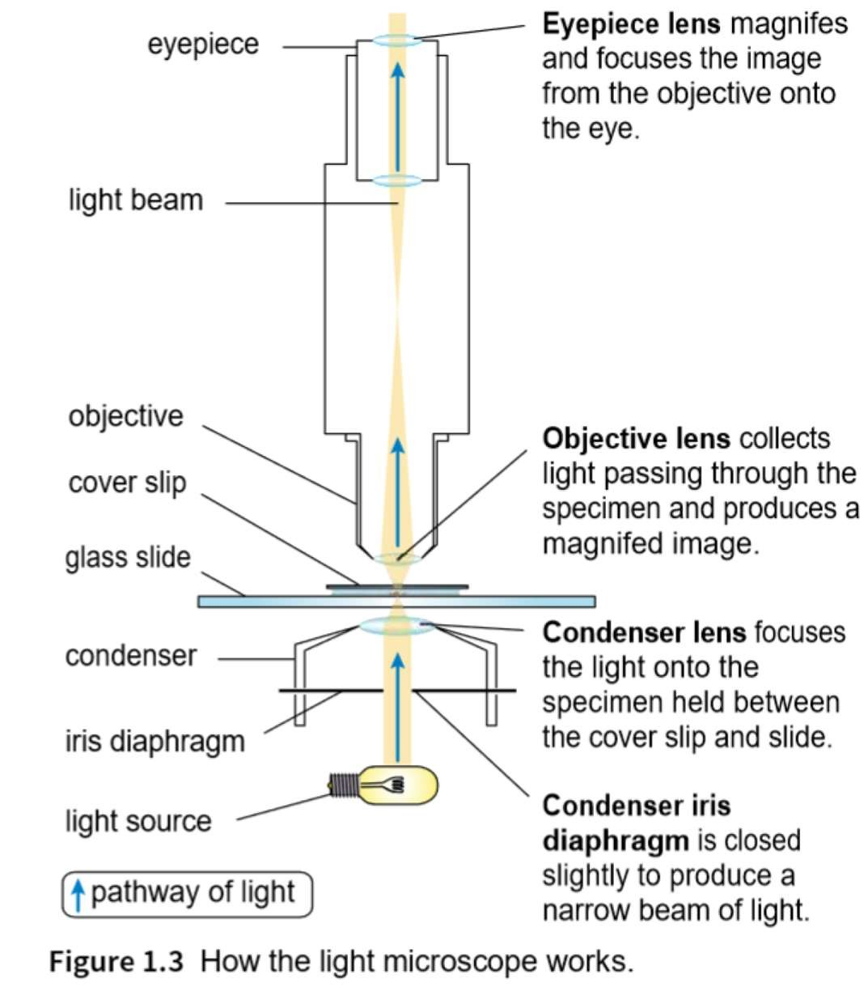
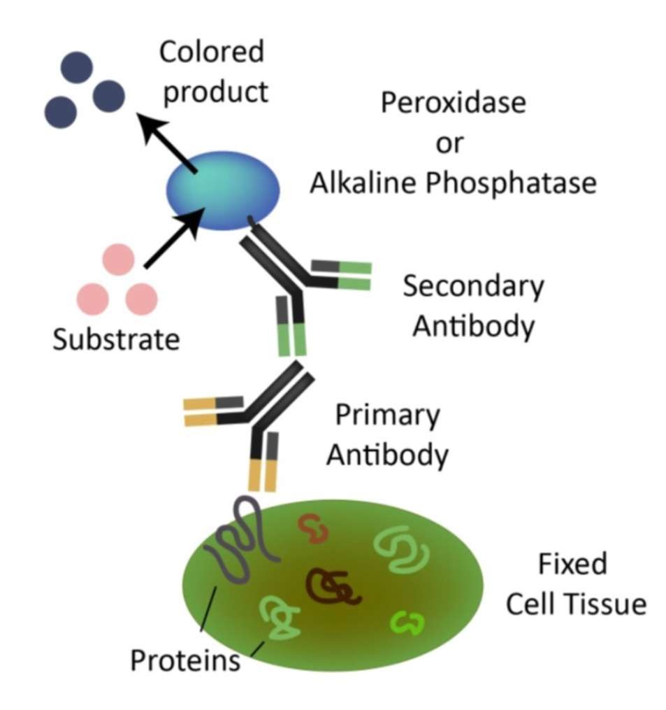
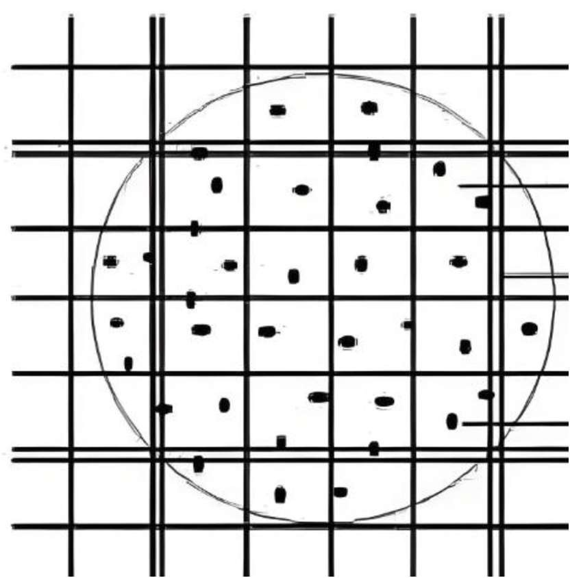

BIO103 · 第 7 章
细胞生物学方法
Cell Biology Approach
虚线下划线为术语；悬停查看中文、英文与释义，完整词典见“术语”。
本章目录
本章是方法学：先看光学显微镜与电子显微镜能“看多大、看多清”，再看免疫组织化学如何把特定蛋白定位到组织切片上，最后是血细胞计数板、ImageJ 与体视学三种计数思路。
本章要点
- 复式显微镜的总放大倍数 = 目镜倍数 × 物镜倍数。
- 分辨率是分辨两个靠近物体的能力；光镜极限约 200 nm，电镜约 0.5 nm。
- 分辨率约为所用辐射波长的一半，因此光镜受可见光波长限制。
- TEM 观察透射束，看内部结构；SEM 观察反射束，看表面三维形貌。
- IHC 用一抗结合抗原、酶标二抗显色，定位蛋白；定量灵敏度低于 Western blot 与 ELISA。
- 抗原修复（HIER/PIER）用于解除固定造成的表位遮蔽；封闭用于降低假阳性。
- 计数板每个大格体积 0.1 mm³，每个小格 1/4000 mm³；压线细胞按“数上不数下、数左不数右”。
- ImageJ 按灰度阈值计数；体视学用计数框做系统随机抽样，得到无偏估计。
7.1 光学显微镜的构造
光学显微镜light microscope的基本部件包括：光源（light source）、聚光镜（condenser）、载物台（stage）、物镜（objective lens）与目镜（eyepiece / ocular lens）。放大倍数magnification定义为物体被放大的倍数，等于目镜倍数乘物镜倍数。
讲义逐件说明了各部件的作用：目镜位于镜筒顶端，供观察，倍数通常为 5×–30×，可带指针；单目或双目镜筒把目镜连接到物镜；镜臂支撑镜筒并连接底座；物镜转换器（nosepiece）固定物镜并可旋转切换；底座容纳照明系统并支撑显微镜；物镜通常有 3–5 个，常用 4×、10×、40×、100×；载物台放置玻片，多数可调节高度；载物台夹或机械载物台固定玻片；光圈（iris diaphragm）是载物台上的圆形开口，让底座的照明到达标本；Abbe 聚光镜把光汇聚到载物台；粗准焦与细准焦螺旋调节焦距；载物台高度调节在垂直与水平方向移动载物台；照明常用低压卤素灯；视场光阑（field diaphragm）调节到达标本的光量。
总放大倍数的算法只有一个：目镜倍数 × 物镜倍数。例如 10× 目镜配 40× 物镜，总放大倍数为 400×。

Clean vector cross-section of a compound light microscope: base with illumination and field diaphragm, Abbe condenser focusing light onto the stage, stage with slide and stage clips, rotating nosepiece carrying 4x 10x 40x 100x objective lenses, arm, coarse and fine adjustment knobs, and eyepiece at the top, with a dashed light path rising from the base through the specimen to the eye. Flat 2D, thin strokes, muted slate blue and warm grey, white background, English labels, no cartoon, no gradient, no shadow.
L11 p.2–3
7.2 放大倍数与分辨率
放大倍数与分辨率resolution是两个不同的概念，讲义反复强调“不要混淆”。分辨率是分辨两个靠得很近的物体的能力；分辨率越高，能看到的细节越多。若两点无法被分辨，它们就会被看成一个点。
数量级要记牢：光学显微镜的最大分辨率约为 200 nm，两个点若比 200 nm 更近就无法被区分为两点；电子显微镜的分辨率约为 0.5 nm，比光镜好约 400 倍。注意表述方式——“数字越大，分辨率越差”，所以 200 nm 的分辨率比 0.5 nm 差。
分辨率受观察所用辐射的限制：分辨率约等于所用辐射波长的一半，即 分辨率 = 波长 / 2。可见光的波长在数百纳米量级，这解释了为什么光镜的分辨率极限在 200 nm 左右；要看得更细，必须换用波长更短的电子束。讲义给出的选择题答案是“可见光的波长”（wavelengths of visible light）。
最大放大倍数也不同：光镜低于 2000×；电镜可达 2.5×10⁵。放大倍数可以继续做大，但超过分辨率极限后只是“把模糊放大”，不会产生新细节——这正是两者必须分开理解的原因。
L11 p.2–5
7.3 透射与扫描电子显微镜
透射电子显微镜transmission electron microscope（TEM）让电子束穿过标本，因此可观察细胞内部与薄切片；只观察透射束。扫描电子显微镜scanning electron microscope（SEM）用电子束扫描结构表面，只观察反射束。
两者的成像特征正好互补：SEM 显示表面、轮廓或三维视图，只显示微绒毛的外部形貌，不同深度都能较好聚焦；TEM 显示二维或平面视图，图像在一个平面上，显示线粒体或微绒毛的切面，呈现细胞内部或内容物。判断图像类型时，看“表面/立体”还是“切面/内部”即可。
电镜的局限有四条：电子不能在空气中传播，整个系统必须处于真空；电子束不能深入生物材料，TEM 只能观察很薄的标本；真空中的标本必须脱水，因而是死标本；图像为灰度（黑白）。
L11 p.6–7
7.4 免疫组织化学的原理与用途
免疫组织化学immunohistochemistry（IHC）用于在组织切片的细胞中显示并定位特定抗原（通常是蛋白质），即确定某一蛋白在组织切片上是否存在、位于何处。与 Western blotting 或 ELISA 等免疫测定相比，IHC 在定量分析上灵敏度较低——它擅长“定位”，不擅长“精确定量”。
其信号放大逻辑是：一抗（primary antibody）结合组织中的特定抗原；再用酶标记的二抗（secondary antibody）与一抗结合，形成抗体–抗原复合物；加入底物与显色剂（chromogen）后，酶催化反应在抗体–抗原结合部位生成有色沉淀。
IHC 的应用包括：观察目标蛋白的表达丰度；观察目标蛋白的亚细胞定位；评估生物标志物；观察多种蛋白的表达谱。讲义以 ATDC 为例：ATDC 在人胰腺癌中高表达，其介导的癌细胞生长依赖 β-catenin 信号；IHC 评分分为中等（++，中等强度染色）与强（+++，强染色）。

L11 p.8–9
7.5 IHC 的前处理：取材、抗原修复与封闭
第一步是准备样本。组织的制备方式决定抗原能被抗体检测到的程度。两种常用的保存方法是冷冻（短期，IHC-Fr）与石蜡包埋（长期，IHC-P）。
第二步是抗原修复antigen retrieval。第一步的固定会导致蛋白交联，遮蔽抗原中的表位（epitopes），限制抗原–抗体结合；修复的目的是解开蛋白交联、暴露被遮蔽的表位，从而显著改善抗体与目标蛋白的结合。方法有热诱导抗原修复（HIER）与蛋白酶诱导表位修复（PIER）。
第三步是封闭（blocking）：必须使用蛋白封闭试剂结合其他非特异蛋白，从而大幅降低假阳性信号。这一步针对的是“抗体会不会乱结合”，与抗原修复针对的“表位能不能被结合”是两个不同问题。
三步的顺序不能颠倒：先固定与切片，再修复表位，最后封闭非特异位点；任何一步省略都会分别导致“无信号”或“高背景”。
L11 p.10–11
7.6 IHC 的检测与成像
第四步是检测。目标可用直接法或间接法、以荧光或颜色偶联的抗体检测。间接法组织染色使用“未偶联的一抗 + 荧光或酶偶联的二抗”组合；常用的酶是辣根过氧化物酶（HRP）与碱性磷酸酶（AP）。
第五步是成像。染色的组织切片通常用光学显微镜或荧光显微镜观察；讲义另列出共聚焦显微镜（confocal microscope），用于获得更高质量的光学切片图像。切片制备使用切片机（microtome）与冷冻切片机（cryostat）。
把五步连起来看：样本制备 → 抗原修复 → 封闭 → 检测（一抗/二抗/酶）→ 成像。每一步的失败都会在最终图像上表现为“假阴性”（无染色）或“假阳性”（背景过深），因此判读图像时必须同时考虑流程质量。
Clean vector five-step horizontal workflow for immunohistochemistry: tissue section on a slide, antigen retrieval unmasking epitopes, blocking with protein reagent covering non-specific sites, primary antibody binding the antigen followed by an enzyme-conjugated secondary antibody, and chromogen substrate producing a brown deposit visualised under a microscope. Flat 2D, thin strokes, muted slate blue and warm grey, white background, English labels, no cartoon, no gradient, no shadow.
L11 p.11–14
7.7 显色流程实例：5-HT 免疫组化
讲义给出一个完整的显色染色流程（chromogenic staining protocol），可作为 IHC 标准步骤的具体版本。其流程为：漂洗（TBS-T / TBS / TBS-T，各 3 次、每次 15 min）；用 0.1% 牛血清白蛋白（BSA）封闭 30 min；一抗孵育（如 rabbit-anti-5-HT，背侧中缝区按 1:120000、纹状体按 1:80000 稀释于含 0.1% BSA 的 TBS-T 中，4 ℃ 摇床 3 天）；漂洗；二抗孵育（如 donkey-anti-rabbit，1:800，室温摇床 1 天）；漂洗；孵育 ABC 复合物（avidin-biotin-peroxidase complex，1:800，2 h，溶液需提前至少 30 min 配制以形成复合物）；漂洗（TBS / TBS / Tris-HCl 50 mmol/L pH 7.6）；DAB（3,3′-二氨基联苯胺）孵育 10 min（5 ml Tris/HCl + 5 ml DAB + 3 μl 30% H₂O₂ + 50 μl 8% NiCl₂）；最后漂洗。
这份流程的两个技术要点值得单独记：ABC 法通过亲和素–生物素–过氧化物酶的复合物放大信号；DAB 在过氧化物酶与 H₂O₂ 存在下生成棕色沉淀，加入镍离子可增强显色对比。抗体的稀释比例与孵育时间随脑区与抗体不同而调整，说明 IHC 是“需要滴定的实验”，而不是一套固定参数。
L11 p.15–16
7.8 血细胞计数板
血细胞计数板blood-cell counting board是常用的细胞计数工具，常用于计数红细胞、白细胞，也常用于计算细菌、真菌、酵母等微生物的数量。
其几何参数是计算的基础：每块计数板分为两个相同的计数池（counting chamber）；高度 0.1 mm；每个计数池长 3.0 mm、宽 3.0 mm；划分为 9 个大格；每个大格面积 1.0 mm × 1.0 mm = 1.0 mm²；每个大格体积 1.0 mm² × 0.1 mm = 0.1 mm³。红色区域用于计数红细胞，蓝色区域用于计数白细胞。
计数池有两种分区格式。Healy 格式：大格分为 16 个中方格，每个中方格再分为 25 个小方格，即 16 × 25 型。Tomay 格式：大格分为 25 个中方格，每个中方格再分为 16 个小方格，即 25 × 16 型。两者的共同点是每个大格由 16 × 25 = 25 × 16 = 400 个小方格组成；每个小方格的体积为 1/4000 mm³。

Clean vector top-down diagram of a haemocytometer counting chamber: two identical counting pools, each divided into nine large squares of 1 mm by 1 mm, one large square enlarged to show the 25 by 16 small-square grid, a side view callout giving chamber depth 0.1 mm, and labels for the red region used for red blood cells and the blue region used for white blood cells. Flat 2D, thin strokes, muted slate blue and warm grey, white background, English labels, no cartoon, no gradient, no shadow.
L11 p.17
7.9 计数规则与边界处理
两种格式的取样方格不同。Healy 格式：计数左上、左下、右上、右下四个方格（共 100 个小方格）中的细胞数。Tomay 格式：计数 5 个中方格（即 80 个小方格）中的细胞数。取四角或取固定数目的中方格，都是为了让样本在视野中均匀分布，减少人为偏差。
为了保证计数准确、避免重复计数与遗漏，压线细胞按固定规则处理：若细胞位于中方格的双线上，数上边线不数下边线，数左边线不数右边线。这条规则的本质是给每个细胞指定唯一归属，使相邻方格不重复计入同一个细胞。
计算浓度的思路是：先数出小方格内的细胞数，再乘以每个小方格的体积（1/4000 mm³）换算为体积浓度，必要时再乘稀释倍数。计数结果可再按计数池体积换算为每单位体积的细胞数。
L11 p.18
7.10 用 ImageJ 描记与计数
图像处理可用 ImageJ 或 Fiji（含 ImageJ2）。描记（delineation）的流程为：打开 ImageJ；经 File 打开图像文件；新建窗口（File → New → Image 或 Ctrl+N），命名并确认；选择工具栏第三个图标“多边形选择”（polygon selections），按 Paxinos 与 Watson 图谱勾画感兴趣区域（region of interest, ROI）；点击 Measure，在 Results 窗口得到面积与均值等数值，复制到 Excel 并随时保存；按 Ctrl+C 复制已勾画区域，粘贴到新建窗口中；关闭时选择保存，并以合适文件名存档。
基于灰度值的计数流程为：打开先前按 ROI 描记的文件；在 Plugins 中选择 Cell Counter，点击 Initialize；灰度测量有两种方法——逐个细胞测量，用多边形指针指向细胞，灰度值显示在窗口右下角，若高于周围细胞/细胞质灰度值的 50% 或 75% 即可判为阳性；或自动测量，选择 Plugins → Filter → Multi-thresholder，选 mixture modeling 并 Set，阈值取“平均灰度值的一半”作为 50% 以上的界限（例如平均灰度 140，则阈值填 70）；然后在 Cell Counter 中选 counters-type 1、keep original，逐一点击阈值显示的细胞计数；最后导出图像、保存标记，并把计数记录到既有 Excel 文件中。
关键点是“阈值必须是相对值”：以周围背景或平均灰度为参照，而不是凭肉眼随意设定，这样不同切片之间才具有可比性。
L11 p.19–24
7.11 体视学计数
体视学stereology是一种无偏的系统随机抽样（systematic random sampling）方法，用于获得总细胞计数。它不是“把整个切片数一遍”，而是按固定间隔随机选取视野，用概率抽样的方式外推总体。
计数所用的探针称为计数框counting frame，是体视学中最广泛使用的探针；它通常显示为红绿两色的框，也可显示为带部分虚线的黑色框。红绿线的作用与计数板的压线规则同源：给每个细胞指定唯一归属，避免因细胞压在边界上而重复计数或漏计。
三种计数方法可以放在一条方法学谱上理解：计数板靠几何体积换算，适合悬液中的细胞；ImageJ 靠像素灰度与 ROI，适合组织切片图像；体视学靠系统随机抽样与计数框，适合需要无偏总细胞数的研究。三者共同的目标都是“让计数可重复、可比较”。
L11 p.25–26